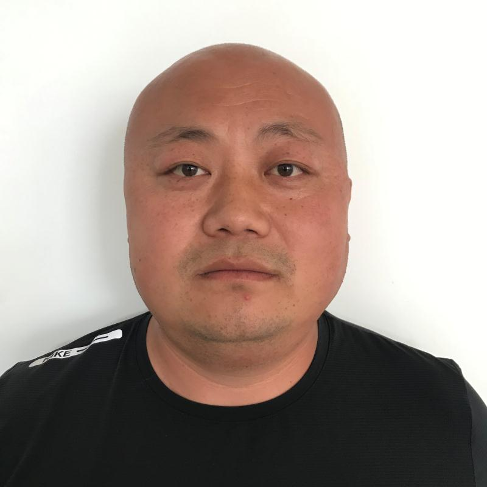

解广阔，男，山东临沂人，毕业于北京理工大学机械电子工程专业，1998年进入施可丰，现任山东施可丰生态农业工程有限公司常务副总经理，负责公司日常运营管理和生产经营工作。作为施可丰生态公司发起人之一，自公司成立以来，在生物质液体肥料和智能农业设备的研发、生产和推广工作中作出突出贡献，他顺应国家水肥一体化政策，带领团队研发推出了含腐植酸水溶肥、含氨基酸水溶肥、大量元素水溶肥、微生物菌肥、中微量元素水溶肥等系列近五十多种产品，并自主研发了小型智能施肥机、智能自助售肥机、配施肥一体机等配套智能施肥设备，为公司创造更大效益的同时也为水肥同施、节水高效及发展绿色农业提供技术支撑。
联系电话：400-6877-333